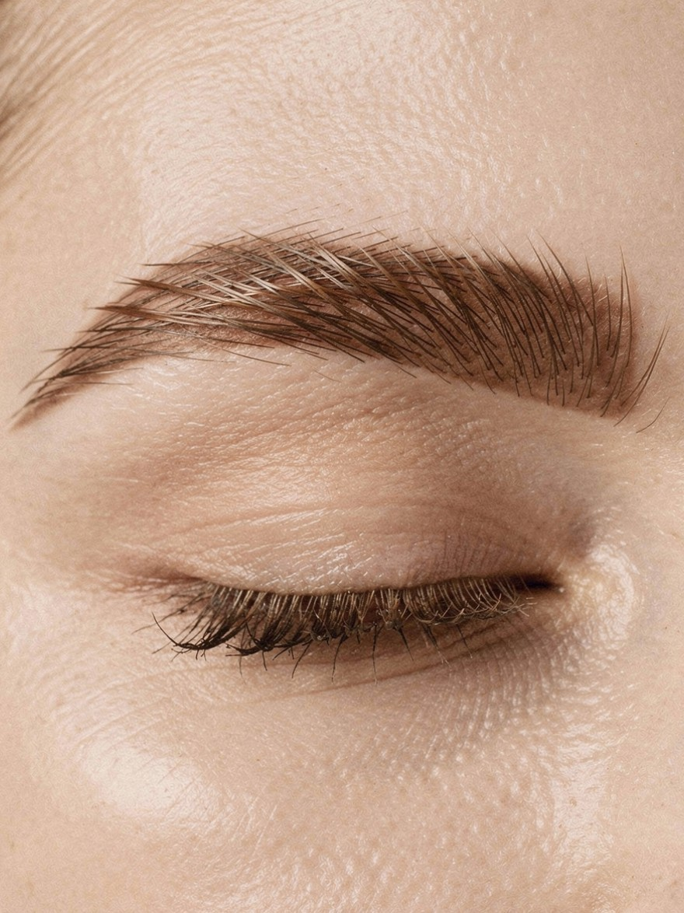

Nº 01Recepção
Boa tarde. Faça o seu check-in.
Nº 02Check-in pelo telefone
Qual é o seu telefone?
Use o número que você deu no agendamento.
Demonstração: qualquer celular com 11 dígitos encontra um horário.
Nº 02Check-in pelo nome
Encontre o seu nome.
Nº 03Confirme o procedimento
Achamos o seu horário.
Hoje · 14h30
Extensão de cílios fio a fio
- Profissional
- Marina Okada
- Duração
- 2 h
- Valor
- R$ 230
Recepção avisada
Já vem alguém te ajudar.
Pode aguardar aqui mesmo. Água, café e chá ao lado do espelho.
Nº 04Ficha rápida
Antes de começar, uma ficha rápida.
Suas respostas vão direto para a ficha da Marina.
Check-in feito
Pode sentar.
A Marina já te chama.
Extensão de cílios fio a fio
Com a Marina · 2 h · R$ 230
14h30